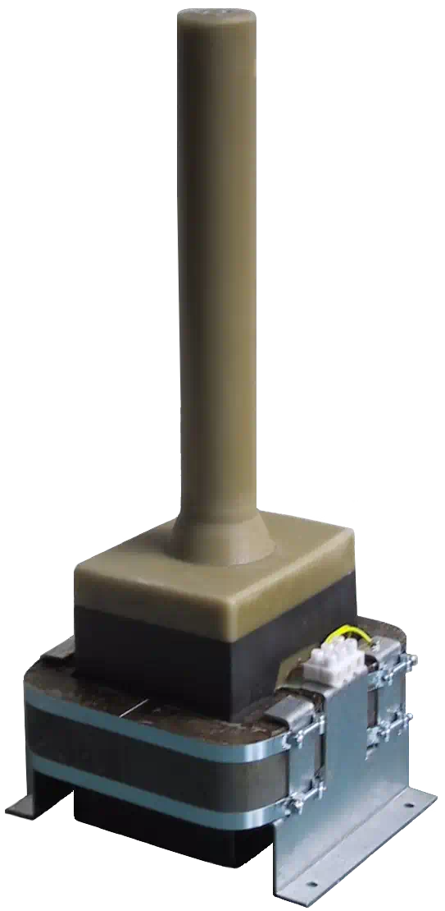
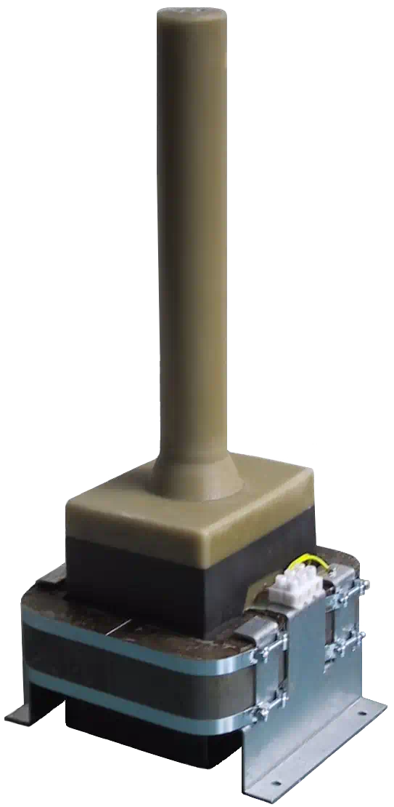

Onze transformatoren en voedingen worden toegepast voor hoge spanningen i.c.m. lage stroomsterktes, kortsluitvast, gestabiliseerd, instelbaar, regelbaar.
Door jarenlange ervaring zijn wij specialist in het maken van betrouwbare kwalitatieve hoogspanningsproducten.
Zowel enkele stuks als seriematig.
Of het nu om waterzuivering, luchtzuivering of andere applicaties gaat: de door ons ontwikkelde en geproduceerde voedingen worden in vele projecten toegepast.
De reparatie-afdeling kan in veel gevallen uw unieke maar defecte transformatoren (zelfs van niet meer bestaande producenten) repareren dan wel reproduceren.
Van transformatoren voor universiteiten tot ontsteekspoelen voor vliegtuigmotoren. Onze producten worden ingezet op plekken waar kwaliteit en betrouwbaarheid noodzakelijk is.


 

Picardi B.V. is specialist in hoogspanningstechniek.
Wij zijn uw partner als u op zoek bent naar een betrouwbare producent van hoogspanningstransformatoren en elektronische hoogspanningsvoedingen.
Wij leveren aan wereldwijde spelers op gebied van luchtzuivering, waterzuivering, ontsteking, ionisatie.
Onze producten worden overal toegepast waar hoogspanning belangrijk is, o.a.
Het spreekt vanzelf dat onze voedingen naar wens leverbaar zijn met galvanisch gescheiden communicatie voor computer-assisted monitoring en control o.b.v. standaard protocollen, o.a. Modbus.
Door Picardi ontwikkelde voedingen en transformatoren worden ingezet voor
Onze produkten vind u terug in apparaten die statische ladingen opheffen of aanbrengen, zoals
Voedingen voor speciale verlichting zijn ook onderdeel van ons produktenpallet, o.a.
Picardi ontwikkelt en produceert voedingen voor apparatuur waarmee elektrochemische reacties worden ingeleid, zoals
Onze voedingen staan centraal in apparatuur waarbij door middel van een hoogspanning vloeistoffen of gassen worden gescheiden, zoals
Picardi B.V. is van oorsprong een familiebedrijf dat in 1975 werd opgericht door de heer G. Wessels, met als doel hoogwaardige hoogspanningsprodukten te maken met lange levensduur.
Het bedrijf is vanaf het begin gevestigd in Vroomshoop, een klein dorp aan het kanaal aan de rand van Twente.
Geproduceerd werd er eerst vanuit een kleine ruimte achter het woonhuis aan de Vriezenveenseweg 31; het bedrijf groeit gestaag en in 1993 volgt de verhuizing naar een bedrijfspand aan Vriezenveenseweg 34a.
In het jaar 2000 neemt de zoon het stokje over van zijn vader: Hans Wessels start een R&D poot met exclusieve focus op electronische hoogspanningsvoedingen met hoog rendement, wederom gedreven door de strategie van milieubehoud door verstandig en efficiënt omgaan met de bronnen die we hebben.
Wegens gezondheidsredenen treedt hij per 1 april 2018 af als directeur en wordt Johan Gerrits — reeds 36 jaar werkzaam bij Picardi B.V. — benoemd tot nieuwe directeur.
In 2020 neemt Johan Gerrits het bedrijf volledig over; vooruitlopend op internationale milieuwetgeving wordt de research geïntensiveerd en vindt de eerder opgedane kennis zijn weerslag in nieuwe hoogfrequent productreeksen, welke o.a. worden ingezet bij fijnstof- en virus-bestrijding.
Onder deze nieuwe leiding blijft de oorspronkelijke ideologie (efficiënt en zuinig omgaan met onze natuurbronnen) de primaire focus. De strategie: “producten zonder zorgen.” Want minder afval en verontreiniging begint bij minder storingen, minder uitval, minder onderhoud en meer continuïteit van bestaande producten.
Picardi B.V. heeft vanaf het begin een twee-pijler strategie gevoerd met duidelijke aandacht voor milieugerichte R&D: minimum verspilling, maximum kwaliteit. Hand in hand met Twentse nuchterheid.
Onze voortdurende inspanning heeft ertoe geleid dat wij een rijke kennis en lange ervaring hebben met diverse materialen, ontwerpen en productiemethoden.
In 1975 begonnen met klassieke «50 Hertz», zijn wij anno 2022 uitgegroeid tot specialisten, deskundig in het ontwikkelen van hoogfrequent en (zeer-)hoog rendement electronische voedingen voor diverse hoogspanningstoepassingen, welke eenvoudig in bestaande of nieuwe regelsystemen kunnen worden geïntegreerd.
“Verstandig en efficiënt omgaan met de bronnen die we hebben” vereist óók sociaal engagement. Inderdaad, wij zijn niet alleen trots op onze producten maar ook trots op het opvallend geringe verloop van personeel in ons bedrijf: oud en jong werken naast en met elkaar. Daarom zijn wij ook een erkend leerbedrijf.
Wij blijven een groeiend familiebedrijf: anno 2022 bestaat de Picardi familie uit 12 kernleden van alle leeftijden.
Picardi B.V.
Vriezenveenseweg 34a
Vroomshoop
Nederland
BTW nr. NL812731499B01
KvK nr. 05044651
| Openingstijden: | |
|---|---|
| Maandag | 7:00 - 17:00 |
| Dinsdag | 7:00 - 17:00 |
| Woensdag | 7:00 - 17:00 |
| Donderdag | 7:00 - 17:00 |
| Vrijdag | 7:00 - 12:30 |